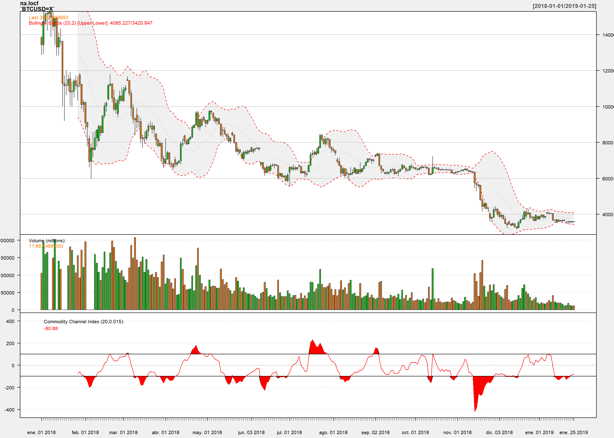
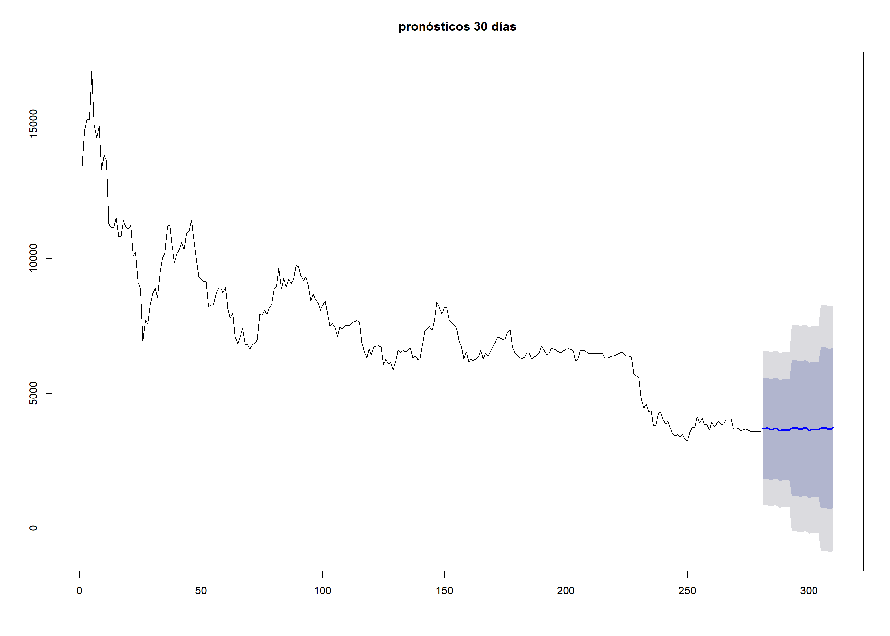

Los modelos de series de tiempo univariados son regresiones de una variable en función a su propio pasado, la cuestión es poder identificar los rezagos adecuados de la variable identificando momentos del pasado que explican mejor a la variable: \(Y_{t} = a_{0} + a_{1}Y_{t-1} + a_{2}Y_{t-2} + \epsilon_{t}\)
Muchos lenguajes de programación como R,Python y programas estadísticos como Stata nos permiten escribir codigo para poder obtener muchas bases de datos en tiempo real de variables financieras, precios de materias primas, tipos de cambio, variables macroeconómicas.
En el caso de utilizar R para poder minar datos del Bitcoin en el 2018 debes escribir el siguiente código :
library(quantmod)
getSymbols("BTCUSD=X",src="yahoo",from = "2018-01-01",
to = Sys.Date())
| BTCUSD=X.Open | BTCUSD=X.High | BTCUSD=X.Low | BTCUSD=X.Close | BTCUSD=X.Adjusted |
|---|---|---|---|---|
| 13850.49 | 12877.67 | 13921.53 | 13444.87 | 13444.87 |
| 13444.87 | 12934.17 | 15306.13 | 14754.14 | 14754.14 |
| 14754.09 | 14579.70 | 15435.01 | 15156.61 | 15156.61 |
| 15156.50 | 14244.67 | 15408.65 | 15180.08 | 15180.08 |
| 15180.08 | 14832.35 | 17126.95 | 16954.79 | 16954.79 |
| 16228.26 | 13902.31 | 16302.92 | 14976.18 | 14976.18 |
| 14976.18 | 14221.55 | 15390.27 | 14468.49 | 14468.49 |
| 14468.09 | 13450.53 | 14919.50 | 14919.50 | 14919.50 |
| 14920.36 | 12825.96 | 14979.95 | 13308.07 | 13308.07 |
| 13308.07 | 12851.92 | 14129.08 | 13841.19 | 13841.19 |
Una correcta visualización de los datos nos permite conocer todo el comportamiento de la variable. Este año el bitcoin sufrió una caída constante.
chartSeries(na.locf(`BTCUSD=X`), theme="white",TA="addVo();addBBands();addCCI()")
El bitcoin tuvo una cotizacióin de casi 20.000 $ a inicios del 2018 y cierra el año con un promedio de 3.700$ .La revolución financiera que significa el bitcoin está en sus precios mínimo, es importante pronosticar el comportamiento de esta criptomoneda constantemente, para eso se utilizará un modelo de Series de Tiempo Univariado llamado ARIMA que para una correcta aplicación sigue los pasos de una metodología de 5 pasos Metodología Box Jenkins
##Pronóstico para los siguientes 30 días 